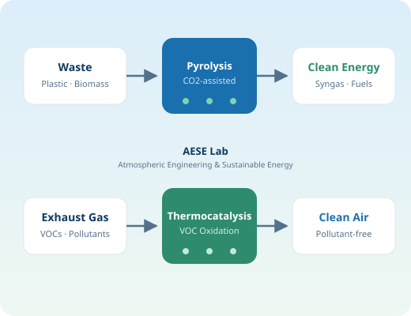
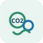

대기오염물질의 발생을 원천적으로 줄이는 사전 제어 기술과 배출가스를 효율적으로 저감하는 사후 공학적 처리 기술을 포괄적으로 연구합니다.We conduct comprehensive research on source reduction technologies to minimize the generation of air pollutants and advanced treatment technologies to remove air pollutants from exhaust gases.
대기 공학 및 지속가능 에너지 연구실은 열화학적 공정을 활용한 폐기물 에너지화를 통해 연료 특성과 연소 효율을 개선하고, 이를 바탕으로 대기오염물질의 발생을 선제적으로 줄이는 기술을 개발합니다. 또한, 연소시설에서 배출되는 휘발성유기화합물(VOCs)을 비롯한 다양한 오염물질의 제거 효율을 높이기 위해 촉매 처리 공정의 설계 및 운전 기술을 연구합니다. The AESE Laboratory develops thermochemical conversion platforms for waste-to-energy to enhance fuel properties and combustion efficiency, thereby mitigating the formation of air pollutants. Additionally, our laboratory designs catalytic treatment processes to improve the removal efficiency of various air pollutants, including volatile organic compounds (VOCs).

플라스틱 폐기물, 바이오매스 등 폐자원의 열화학적 처리(열분해)를 통해 합성가스(syngas), 항공유 등 고부가가치 연료와 화학물질을 회수하는 기술을 연구합니다. We recover high-value fuels and chemicals — such as syngas and aviation fuel — through thermochemical processing (pyrolysis) of plastic waste and biomass.

CO2를 반응 매체로 활용하는 열분해 공정을 통해 H2/CO 비율 제어, CO-rich 합성가스 생산 등 탄소중립·탄소네거티브 에너지 전환 기술을 개발합니다. Using CO2 as a reaction medium in pyrolysis, we develop carbon-neutral and carbon-negative energy conversion technologies, including H2/CO ratio control and CO-rich syngas production.
바이오매스 기반 연료 생산(바이오디젤 등)과 기능성 바이오차 제조·활용 기술을 연구하여 탄소 저감과 자원순환에 기여합니다. We study biomass-based fuel production (e.g., biodiesel) and the synthesis and application of engineered biochar, contributing to carbon reduction and resource circulation.
연소시설 배출가스 중 VOCs 등 대기오염물질을 효율적으로 제거하기 위한 촉매 소재 및 촉매 처리 공정의 설계·운전 기술을 연구합니다. We design catalytic materials and processes for the efficient removal of VOCs and other air pollutants from combustion exhaust gases.